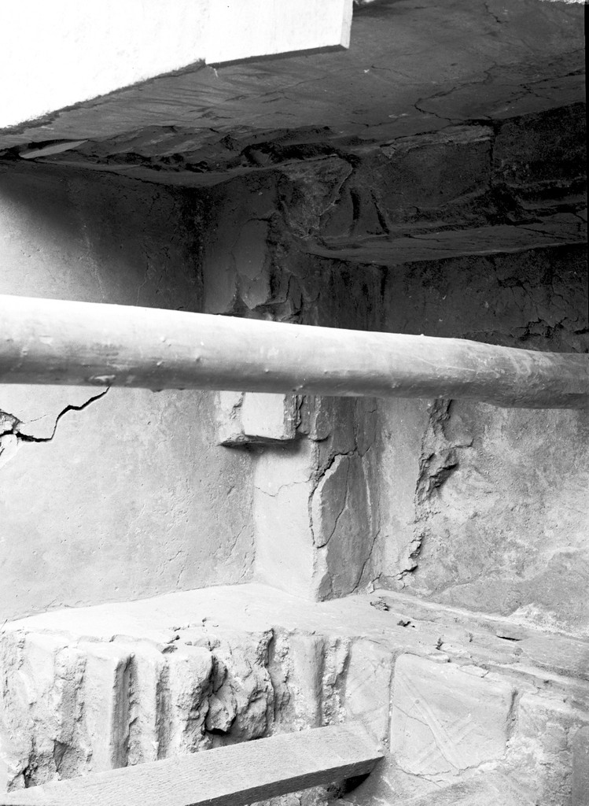

Dura-Europos Church

A converted house in the Roman frontier city of Dura-Europos on the Euphrates, excavated by Yale University and the French Academy. It is the oldest surviving church building ever found: a plain assembly room beside a baptistery whose walls were painted with the Good Shepherd, the healing of the paralytic, and the women at the empty tomb.
Biblical Significance
Before there were cathedrals, there was a house with pictures on the walls — the stories Christians told their newest members as they stepped into the water. The paintings show a church that already treasured the same Gospels we read: the Shepherd who seeks, the Healer who forgives, and the tomb that could not hold him.
Interpretations
Scholars agree the house-church and its baptistery paintings are third-century; the building was buried in the city’s defenses in AD 256, which preserved the paintings.